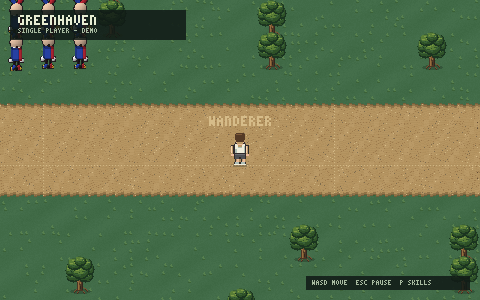

Talk to the meadow
Enter opens chat and reaches everyone in your world. Villagers talk back, and some keep shops — you start with 100 coins and a merchant who deals in sand and clay.
Greenhaven is a native 2D MMORPG you run on your own machine. One shared meadow, four skill ladders under your feet, three worlds on one account — and a character that is still there tomorrow.
Native Rust + BevyNo browser, no launcherSaves every visitFree

You wake in Deepwood, walk out along one faint track, and Ottertown is already busy being a place — with other players in it, or without.
Enter opens chat and reaches everyone in your world. Villagers talk back, and some keep shops — you start with 100 coins and a merchant who deals in sand and clay.
You send where you want to go; the world server decides where you stand. No slipping through a tree on the diagonal, no rubber-banding into the river.
Name, place, skills, coins and inventory are saved with every visit. One account, three worlds. The meadow does not forget you.
Nine trees, twenty rocks, six fish, and sand and clay in the ground. Every harvest is checked by the world and every point of XP is kept.
Hold Shift to run at double speed. Fresh ground under your feet trains Stride — loops around one tile pay nothing. The dust follows your boots.
F5 stands you inside your character's eyes, M unrolls the full world map, P opens your skills sheet. F1 lists every key.
A native window, not a browser tab. Rust world server, Bevy client, PostgreSQL saves. Windows and Linux today; no account needed to wander Single player.
Four skills climb to 99 and every point of XP is saved.
Nine tree kinds, roughly one every ten levels — from the young oak by your first campfire to the elderwood at 80.
Twenty rock kinds from plain stone at level 1 to diamond at 90. Ores, gems, mithril, orichalcum. The rocks never run out.
Six tiers from the minnow at level 1 to the mooncale at 80. Stand still at a spot, cast, and a few seconds later something pulls back.
Hold Shift to sprint at 2× walk speed. A fresh cell pays +4 Stride XP; warm ground pays breath back, not XP.
Press PLAY and the world chooser opens. Each world is its own copy of Ottertown with its own players. Your account works on all three; your pick is remembered between launches.
The main meadow. Where most people wake up, and where the first campfire gets crowded.
Same map, a quieter square. Good for a long uninterrupted mining session at the quarry.
The spare. Lit up when the operator needs the room; otherwise it waits.
You open your eyes in a hidden clearing: a cold campfire, four young oaks, one faint track out. Beyond it waits a 250×250 world — a decked village square, a ring road, three timber bridges over the river, a lake with piers, an orchard, a stone circle and a quarry full of ore.

Hi. I'm Ryan, the one person making Greenhaven. It is early — really early — and you are trying it anyway. Thank you. Pick a name, walk out of the wood, and tell me what you find.Otterdays — Happy Yak Productions
The main menu was rebuilt around a single PLAY button and a world chooser that finds Worlds 2 and 3 on its own. A short note from the dev greets you once per launch. "Remember username" on the log-in screen; passwords are deliberately never saved.
Bark chips fly off the tree, soil puffs off the spade, and a level-up shines the badge and sweeps the XP bar once. Everything respects the reduced-motion setting.
Free. No launcher, no browser, no account needed to wander Single player. Requirements & FAQ →
v0.1.12 · EARLY DEVELOPMENT · WINDOWS & LINUX